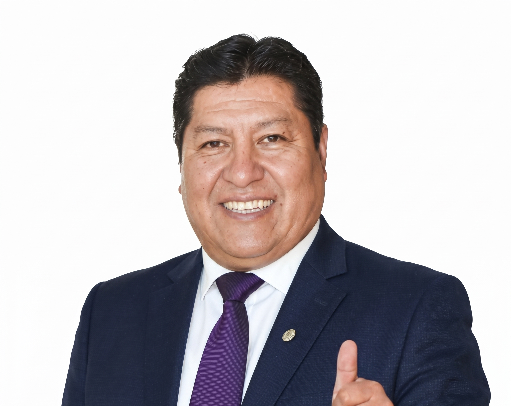
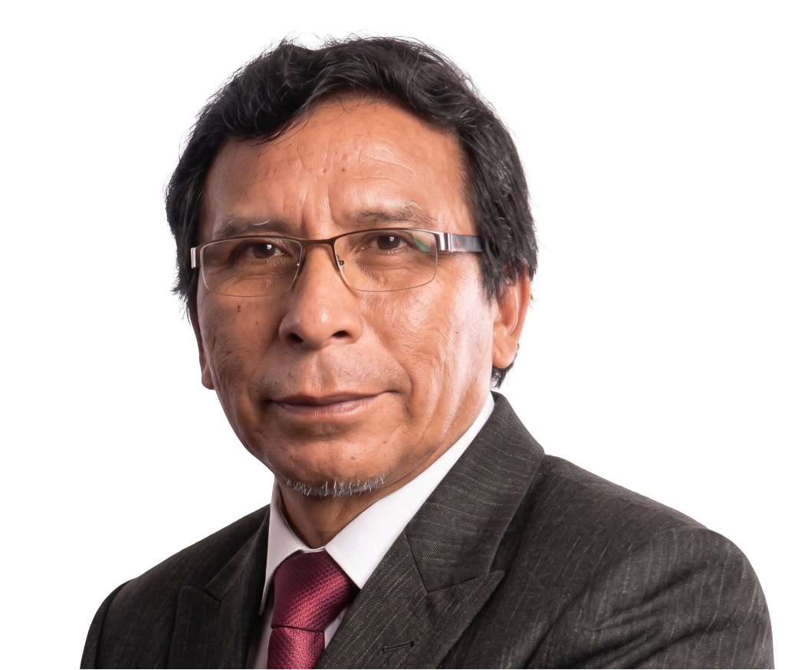

Equipo de Decanos y Directores

Dr. Marcos Rey
Ciencias Exactas

Dra. Elena Soler
Ingenierías

Dr. Hugo Torres
Ciencias de Salud

Dra. Ana Belén
Derecho
Candidato a Rector
Especialidad: Ingeniería Metalúrgica y Ambiental
Enfoque: Contaminación ambiental, tecnologías limpias en minería

Candidato a VR Académico
Especialidad: Zootecnia y Producción Animal
Enfoque: Desarrollo sostenible, recursos naturales

Candidato a VR de Investigación
Especialidad: Ciencias Sociales y Marketing
Enfoque: Comportamiento organizacional, desarrollo rural
Ciencias Exactas
Ingenierías
Ciencias de Salud
Derecho